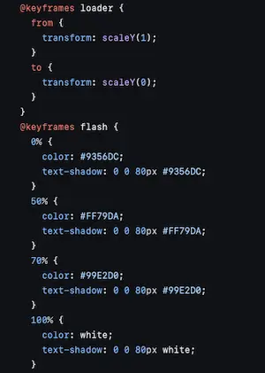

CSS animations
CSS animations c'est quoi ?
Les animations CSS permettent de créer des effets de mouvement et de transformation en modifiant progressivement les propriétés CSS des éléments HTML sur une durée spécifiée. Elles sont utilisées pour ajouter des transitions fluides et des effets dynamiques aux pages web sans avoir besoin de JavaScript.
Dans ce projet
J'ai développé plusieurs animations que je vous liste juste en dessous.
Ouverture de la page d'accueil
Défilement de l'ouverture des menus
Sélection du plat